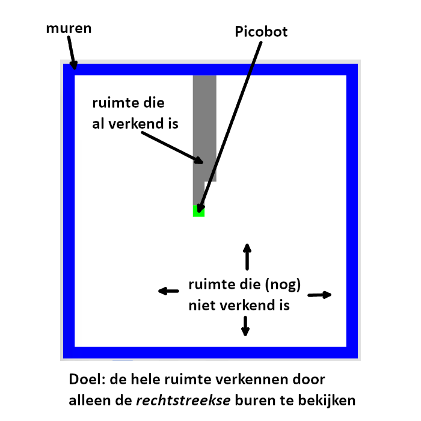

Picobot¶
Nu al een nieuwe taal?
Python¶
General purpose language: een taal voor algemene toepassingen
Je zult dit semester met ongeveer 50% van de taal kennismaken.
Picobot¶
Special purpose language: een taal voor een specifieke toepassing
Je zult binnen een halfuur met 100% van de taal kennismaken.

Het probleem¶
De volledige dekking van een kamer:
met alleen lokale waarneming
zonder herinnering
Met lokale waarneming bedoelen we dat Picobot alleen maar zijn directe omgeving ziet, het heeft geen idee van de volledige ruimte! Denk aan het stofzuigen van jouw kamer: jij kent de volledige ruimte, maar Picobot kan helaas niet zo ver kijken …
Picobot is als een Roomba, een robotstofzuiger met maar een beperkt aantal sensoren. En Picobot is héél eenvoudig, het heeft maar een beperkt geheugen en kan zich dus niet herinneren waar het eerder is geweest!


Picobot beweegt zich in een afgesloten ruimte anders kunnen bijzondere dingen gebeuren…
De omgeving¶
Picobot ziet alleen maar ten N, E, W, en S
(NOWZ? … Noord, Oost, West, Zuid!)

xxxx
Picobot kan dus alleen maar ten (N) noorden, (E) oosten, (W) westen en (Z) zuiden kijken, en niet bijvoorbeeld noord-west! We gaan de volgende notatie gebruiken om de omgeving aan te duiden: xxxx. Als Picobot muren ziet dan zal het in de notatie volgens NEWS worden aangegegven, bijvoorbeeld:

NxWx
In dit geval geven we aan dat ten (N) noorden en (W) westen zich een muur bevindt en ten oosten en zuiden lege ruimte, daar blijft x staan. De huidige omgeving kan dus worden beschrven door NxWx.

In totaal zijn \(2^4 == 16\) combinaties van omgevingen mogelijk waar Picobot zich op een enkel moment in kan bevinden. Bedenk ook dat de situatie NEWS niet zal kunnen gebeuren!
De staat¶
De huidige staat (“situatie”) waar Picbot zich in bevindt
Picobot’s geheugen is een enkel getal en start altijd met 0 en dit representeert de huidie staat. Staat en omgeving is alles wat de Picobot kent van de wereld!

De regels¶
Het combineren in regels van omgeving en staat om door Picobot te worden uitgevoerd
Bijvoorbeeld, twee mogelijke regels:
Huidige staat |
Omgeving |
Stap |
Richting |
Nieuwe staat |
|
|---|---|---|---|---|---|
regel A |
|
|
|
|
|
regel B |
|
|
|
|
|
Lees een regel (bijvoorbeeld regel A) als volgt: als de huidige staat van Picobot 0 is en de omgeving gelijk is aan Nxxx, neem dan één stap richting (S) zuid en zet de nieuwe staat op 0.
Zoals je straks kunt zien zal je een regel als volgt voor Picobot kunnen schrijven (syntax):
0 Nxxx -> S 0
Als Picobot een stap heeft genomen zal het het alle regels weer doornemen tot het een regel ziet die overeenkomt met zijn huidige staat en omgeving en zal deze vervolgens uitvoeren.
Wildcards¶
Een optionele aanduiding van de omgeving
Huidige staat |
Omgeving |
Stap |
Richting |
Nieuwe staat |
|
|---|---|---|---|---|---|
regel A |
|
|
|
|
|
Met een asterisk (*) kan je aangeven dat een bepaalde richting optioneel is. In dit voorbeeld moet het (N) noorden leeg zijn, (O) oost, (W) west en (Z) zuid mogen zowel leeg als gevuld zijn.
Complexiteit¶
Hoeveel regels zijn nodig?

Picobot is een complex probleem, maar hoe complex? Het kortste Picobot programma om een lege ruimte te doorlopen telt 6 regels …

Het kortste Picobot programma om dit doolhof te doorlopen telt 8 regels. Met maar twee extra regels valt dit ogenschijnlijk veel complexer probleem op te lossen! We nemen je stap voor stap door een mogelijke strategie om dit in een beperkt aantal regels op te lossen.
Algoritmen¶
Right Hand Rule
https://en.wikipedia.org/wiki/Maze_solving_algorithm
Eén mogelijke strategie voor een oplossing is de “Right Hand Rule”, oftwel blijf de wand steeds aan één kant volgen (dit kan zowel de linker- als rechterkant zijn, zolang je maar consequent een richting blijft aanhouden!).
Richting¶
Richting is belangrijk want daarmee weten we wat links of rechts voor Picobot is!
De staat¶
Deeloplossing: gebruik de staat om aan te geven in welke richting Picobot staat:
staat
0= (N) noordstaat
1= (E) ooststaat
2= (W) weststaat
3= (S) zuid
Maar hoe nu om te gaan met de omgeving (NEWS)? Als je het doolhof bekijkt zal je zien dat je met een beperkt aantal situaties te maken heb: Picobot kan zich in een gang, een kruispunt of een doodlopend punt bevinden!
Situaties¶
Afhankelijk van de situatie (de combinatie van staat en omgeving) zullen regels moeten worden opgesteld. De drie mogelijke situaties zijn:
situatie A: een gang
situatie B: een splitsing
situatie C: een doodlopend punt
Op basis van staat (welke richting Picobot gaat) en omgeving (gang, splitsing of doodlopend) kan je nu regels gaan opstellen!
A. De gang regel¶
Huidige staat |
Omgeving |
Stap |
Richting |
Nieuwe staat |
|---|---|---|---|---|
|
|
|
|
|
Als je naar het (N) noorden staat (de staat is 0!) met een wand aan de rechterkant en open ruimte naar voren, neem dan een stap naar voorwaarts.
B. De splitsing regel¶
Huidige staat |
Omgeving |
Stap |
Richting |
Nieuwe staat |
|---|---|---|---|---|
|
|
|
|
|
Als je naar het (N) noorden staat en er is geen wand aan de rechterkant, stap dan naar (E) oost om de wand te blijven volgen en zet de staat op 1 (richting (O) oost).
C. De doodlopend punt regel¶
Huidige staat |
Omgeving |
Stap |
Richting |
Nieuwe staat |
|---|---|---|---|---|
|
|
|
|
|
Schrijf 1 of 2 regels om Picobot rechts te houden als het een doodlopend punt tegenkomt. Let op, richting X betekent blijf staan!
Herhaal dit principe voor situatie A, B of C nu voor elke mogelijke richting die Picobot op kan gaan om tot een complete set van regels te komen! Zou je het aantal slim kunnen reduceren tot 8 regels (ons record)?